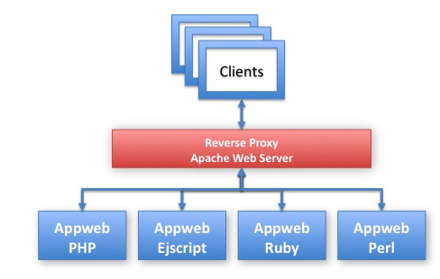
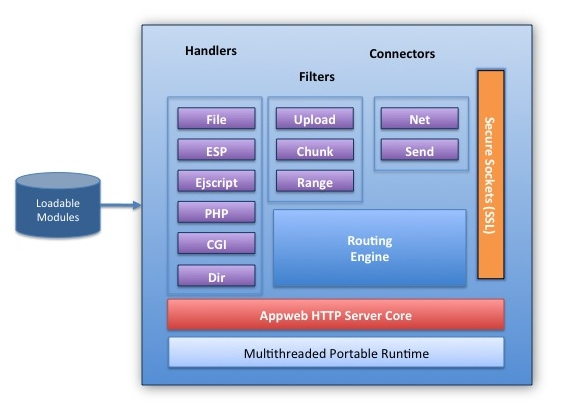

Quick Nav
See Also
Embedthis Appweb™ Overview
Appweb is an embedded web server for the efficient hosting of web applications and frameworks. It is exceptionally fast and compact and has an extensive set of features.
Highly Optimized
Appweb is optimized for hosting dynamic web applications via an event driven, multi-threaded core to deliver exceptional throughput and effective memory utilization. It is compact and will embed using as little as 800K of memory. It is especially effective in reducing the per-request memory overhead for web applications.
Extensive Features
Appweb has a strong set features including: SSL, TLS, basic and digest authentication, virtual hosting, loadable modules, Apache style configuration file, PHP, Ejscript, CGI, sandbox resource limits, logging, angel monitoring process and extensive conditional configuration and compilation controls.
With these features, Appweb is designed to make hosting and embedding web applications painless. Whether they are based on server-side JavaScript, PHP, Ruby or custom embedded device applications, Appweb is the perfect back-end to host your web application.
Deployed Widely
As one of the most widely deployed embedded web servers, Appweb is being used in networking equipment, telephony, mobile devices, consumer and office equipment as well as hosting for enterprise web applications and frameworks. It runs equally well stand-alone or in a farm behind a reverse proxy such as Apache. Appweb provides both Open-Source and commercial licenses and comes with full source code.
Components
Appweb provides the following components:
- HTTP web server program and library
- HTTP client program and library
- Angel and monitor processes
- Support for the web frameworks: PHP and Ejscript
- Loadable modules for CGI, EGI, authentication, directory listings and file upload
- Secure Socket Layer (SSL/TLS)
- Complete documentation with samples
- Full source code
Goals and Non-Goals
The goal of Appweb is to create the best web server for hosting web applications and frameworks whether they be embedded device applications or enterprise applications behind a reverse proxy. This requires that Appweb be:
- Robust and secure
- Efficient with memory
- Fast with low latency
- Easy to configure and manage
Non Goals
Appweb was specifically designed to handle small loads exceptionally well. An explicit goal was NOT to create a single, monolithic, highly scalable web server like Apache, that can handle thousands of simultaneous users. Note that Appweb will scale very well when used behind a reverse-proxy such as Apache or Lighttpd.
Target Uses
Embedded Device Applications

When used in embedded devices or applications, web servers must assume they are secondary to the essential functions the device or application must perform. As such, the web server must minimize its resource demands and should be deterministic in the load it places on a system.
Appweb excels in this regard and is:
- Fast and compact with a small memory footprint (from 800K).
- Easily embedded in applications and devices — via a one line API.
- Easy to configure and administer — via an Apache compatible configuration and extensive build time configuration options.
- Secure by design and by default.
- Minimal in its demand on system resources — via configurable resource limits.
Appweb is the #1 embedded web server and has been successfully deployed in millions of devices and embedded applications.
Web Applications Behind Reverse Proxies
Ruby and PHP have transformed the landscape for developing web 2.0 applications. They have made many tasks easier, but deploying these applications has not been quite so smooth. The "dirty-little-secret" about using these web frameworks is — deployment is messy and difficult.
CGI, FastCGI, Mongrel-Clusters ... many solutions have been tried. More recently, the best solution is emerging — to deploy these applications behind a reverse proxy. This permits the front-end web server to exclusively serve static content and route the incoming requests. The back-end can then focus on actually running the application.

Appweb is an ideal back-end web server in this scenario for running web applications. Because Appweb is a fast, multi-threaded, event driven server, each Appweb instance can host several web application sessions for maximum efficiency and minimal memory footprint. Due to its Apache compatible configuration file, you don't have to learn a whole new configuration setup. Using this configuration, you will lighten the load on your web installation, provide better response to clients and simplify your configuration.
Appweb Internals
The core of Appweb is an event-driven, multi-threaded HTTP pipeline above which modules are loaded to provide content specific handling and to extend its functionality.

Appweb has the following feaures:
- High performance multi-threaded core.
- Modular architecture with dynamic module loading.
- Request oriented memory allocator for fast allocations and to eliminate memory leaks.
- Portable runtime layer to isolate platform dependencies.
- Sandboxing to limit resource consumption for more robust operation.
- Safe programming layer to prevent buffer overrun exploits.
- Apache compatible configuration.
- Extensive logging and debug trace.
Request Pipeline
Appweb has an efficient, zero-copy request bi-directional pipeline to process requests and generate
responses. This consists of a mechanism of queues, packets, buffering and event scheduling. The pipeline
architecture is highly optimized and supports the efficient transmission of data without copying. It uses
sendfile, async I/O and vectored, scatter/gather writes to the network to avoid the costly aggregation of
data and headers in a single buffer before writing to the network. 
Security
Most web servers have become more secure by a painful process of discovery. While it is no guarantee, developing a web server to be secure by design is easier than trying to engineer-in security after the fact. Securing embedded web servers is even more difficult, as it must be done without increasing memory footprint or degrading performance.
Embedthis Portable Runtime (MPR)
Appweb has been designed to be secure from the foundation up by using a Portable Runtime (MPR). The MPR is a cross-platform layer that permits over 97% of the Appweb code to be portable. It includes many mechanisms to assist in the creation of secure application. One such facility is a safe string and buffer handling module to help eliminate buffer overflows that have plagued many products.
Sandboxing
Appweb closely controls its use of system resources via a technique known as "sandboxing". This means running the web server within tightly controlled limits so that request errors will not compromise system operation. Appweb has also been hardened against several common denial of service attacks.
Appweb can be configured to:
- Preallocate memory and not grow beyond predefined memory limits
- Reject requests that are too large
- Reject URLs that are too long
- Run single-threaded or use a limited pool of reusable threads to service requests
- Be run by a designated user account or user group
To build on this foundation, Appweb also provides a Secure Sockets Layer and Digest authentication.
Want More?
To learn more about Appweb, please read: